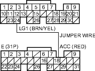
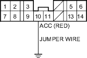

- Turn the ignition switch ON (II).
- Momentarily connect ECM/PCM connector terminals A24 and E18 with a jumper wire several times.

Is there a clicking noise from the A/C compressor clutch?
YES |
- Go to step 3. |
NO |
- Go to step 6. |
- Start the engine.
- Turn the blower switch ON.
- Turn the A/C switch ON.
Does the A/C operate?
YES |
- The air conditioning signal is OK. |
NO |
- Substitute a known-good ECM/PCM and recheck (see page 11-6). If symptom/indication goes away, replace the original ECM/PCM. |

- Momentarily connect the under-hood fuse/relay box 14P connector terminal No. 10 and body ground with a jumper wire several times.

Is there clicking noise from the A/C compressor clutch?
YES |
- Repair open in the wire between the ECM/PCM (E18) and the A/C clutch relay. |
NO |
- Check the A/C system for other symptoms. |